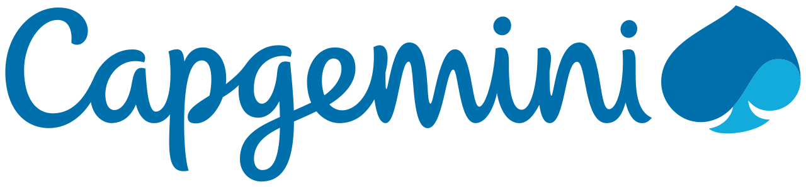

DONGARI AVINASH VARMA
Senior DevOps Engineer | Platform Engineering | SRE
10+ Years ExperienceDevOps and Platform Engineering professional with strong experience in Azure cloud infrastructure, Kubernetes (AKS), CI/CD automation, GitOps practices, and Infrastructure as Code. Experienced in managing scalable enterprise environments using Terraform, Azure DevOps, and observability platforms.
Profile Highlights
- 🚀Led enterprise-scale Azure DevOps and platform engineering initiatives across mission-critical production environments
- ☸Specialized in Kubernetes (AKS), GitOps workflows, CI/CD automation, and Infrastructure as Code using Terraform and Argo CD
- ☁Built and managed secure, scalable, and highly available cloud platforms across Azure, AWS, and hybrid environments
- 🛡Strong expertise in Site Reliability Engineering (SRE), production operations, incident management, and platform resilience
- 🔐Experienced in modern DevSecOps practices including secure CI/CD, observability, governance, and deployment standardization
- ⚙Hands-on with GitHub Actions, Azure DevOps, Flux CD, Helm, Prometheus, Grafana, and enterprise monitoring ecosystems
- 🤝Proven ability to collaborate with cross-functional teams, drive automation, and improve developer productivity at scale
Technical Domains
Cloud & Platforms
Azure, AWS, GCP, ARM Templates, Platform Engineering, Production Ops
CI/CD & Governance
Azure DevOps, Classic & YAML Pipelines, Jenkins, Maven, Release Controls
IaC & Automation
Terraform, ARM Templates, PowerShell, Bash, Python, Infrastructure Automation
GitOps & Deployment
Argo CD, Flux CD, Helm, Kubernetes Deployment Strategies
SRE & Observability
Incident Mgmt, SLA/SLO/SLI, Prometheus, Grafana, Azure Monitor
DevSecOps
Secure CI/CD, Secret Management, Image Scanning, Policy Enforcement
Career Timeline
Work Responsibilities
DONGARI AVINASH VARMA — Senior DevOps Engineer | 10+ Years Experience

TATA Consultancy Services Ltd — Assistant Consultant (DevOps Engineer)
Apr 2023 – Present • Hyderabad- Azure DevOps
- AKS
- GitOps
- Argo CD
- Flux CD
- Terraform
- SRE
- Azure Monitor
- Managed AKS clusters for scalable microservices workloads and improved platform stability through standardized operational practices.
- Implemented GitOps-oriented deployment workflows using Argo CD and Flux CD for Kubernetes environments with automated reconciliation.
- Automated cloud provisioning and release pipelines using Terraform and Azure DevOps reducing deployment time by 50%.
- Strengthened production reliability through incident response, release governance, and post-deployment validations.
- Enhanced observability with Prometheus, Grafana, Azure Monitor, and Log Analytics for proactive issue detection.
- Implemented IaC best practices reducing manual configuration errors by 45%.
- Established SRE practices for 99.95% uptime SLA across critical microservices deployments.
- Designed automated backup and disaster recovery procedures ensuring RPO of 1 hour and RTO of 4 hours.
- Conducted production readiness reviews for enterprise applications supporting 100K+ concurrent users.

Capgemini Technology Services India Ltd — Senior Consultant
Jan 2020 – Dec 2022 • Hyderabad- AWS
- Terraform
- Jenkins
- Kubernetes
- Docker
- DevSecOps
- SLA/SLO/SLI
- Led enterprise CI/CD implementation with Jenkins and Maven improving deployment consistency by 60%.
- Provisioned cloud environments using Terraform-based IaC for auditable infrastructure changes across AWS and Azure.
- Managed Kubernetes and Docker lifecycle with secure pipeline controls for enterprise workloads.
- Improved operations through monitoring and runbook execution reducing MTTR by 40%.
- Collaborated to improve release quality and stability for 10+ critical services.
- Developed DevSecOps governance frameworks including secret rotation, image scanning, and policy enforcement.
- Implemented SLA/SLO/SLI dashboards for 15+ services enabling data-driven reliability improvements.
- Designed multi-region failover strategies and chaos engineering practices.

Eurofins IT Solutions Pvt Ltd — Senior Associate
Oct 2019 – Jan 2020 • Bangalore- CI/CD
- Production Ops
- Release Support
- Incident Management
- Supported enterprise deployment pipelines and managed staging/UAT/production readiness across services.
- Contributed to incident triage, release coordination, and operational documentation.
- Executed knowledge transfer and transition support activities across teams.
- Coordinated cross-team release activities ensuring zero-downtime deployments.
- Established incident post-mortems reducing recurring issues by 30%.
Siemens Healthcare Pvt Ltd — Senior Engineer
Aug 2017 – Sep 2019 • Bangalore- Azure
- IIS
- Ansible
- Jenkins
- AKS
- Terraform
- Implemented Git-based branching and release workflows improving deployment traceability for 15+ services.
- Automated CI/CD pipelines with Jenkins and Maven reducing manual interventions.
- Provisioned infrastructure using Terraform and supported Kubernetes container operations.
- Administered Azure and IIS workloads achieving 99.9% uptime.
- Integrated artifact management improving rollback readiness and deployment quality.
- Mentored junior engineers on DevOps best practices within Azure ecosystem.
- Designed logging and monitoring strategies for healthcare compliance and security audits.

NTTDATA Delivery Services Pvt Ltd — System Admin Consultant
Nov 2015 – Jul 2017 • Bangalore- AWS
- Ansible
- Docker
- Kubernetes
- Maven
- ELK Stack
- Automated release workflows using Maven and Jenkins reducing manual effort by 50%.
- Built Docker-based delivery pipelines deployed through Kubernetes manifests across environments.
- Maintained AWS-aligned operational workflows for scalability and production continuity.
- Configured ELK-based monitoring for infrastructure and application observability.
- Implemented infrastructure hardening following AWS Well-Architected Framework principles.
- Established runbooks reducing incident resolution time by 35%.
- Managed Ansible playbooks for configuration management across 100+ servers.